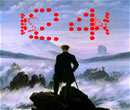
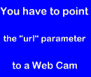
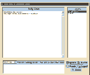
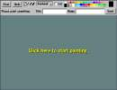

| |
|
Applet Tutorial: Other Effects
|
| |
|
This category includes 17 applets, i.e., anfyclock,
anfycam, anfychat, anfypaint, anfypuzzle, blobs, blur, fire, flag,
flag 2, madtext, plasma, solidscroll, spiralstar, startext, text
scroller and zoomblur in particular.
Now look at each applet and select one to proceed
for detailed applet specific instructions.
|
 |
(1) AnfyClock applet
This applet shows a clock on the applet area. The user can
choose from three display modes: 2d, 3d and "old"
style clock.
|
 |
(2) AnfyCam applet
This applets gives an alternative image loading function
for WebCam in place of simple meta-tag in HTML.
|
 |
(3) AnfyChat applet
The AnfyChat is a client/server solution to provide an IRC-like
chat on web pages. Unlike other Anfy applets, you have not
to copy the .class files on your site, but instead place only
the html parameters to load the chat from our server.
|
 |
(4) AnfyPaint applet
This applet provides a complete paint program on the web
with image save function. So, you can collect your visitors'
works easily.
|
 |
(5) AnfyPuzzle applet
This is a popular game applet which disassemble the image
and let you recompose it from the fragments. Simple but fun.
|
|
(6) Blobs applet
This applet visualises so-called blobs,
light balls, which you may call rather "new age"
effect.
|
 |
(7) Blur applet
This applet displays a series of images with
sound and blur effects.
|
 |
(8) Fire applet
This applet visualises realistic flame.
|
 |
(9) Waving flag applet
This applet simulates a waving flag. 34 nations'
flags are supported.
|
|
(10) Waving flag applet
2
This applet loads your selected image and
waves it.
|
 |
(11) MadText applet
This applet displays a scrolling text, using colored fonts.
There are some effects available, including falling, distortion,
zoom rotator and blur effect.
|
 |
(12) Plasma applet
This applet produces so-called "plasma"
effect using 3 types of generators.
|
 |
(13) Simple text scroller
This applet is a very simple text scroller,
which most Anfy applets incorporate somehow.
|
|
(14) SpiralStar applet
This applet shows some animations of a spiral and/or a star
drawn in real-time
with psychedelic backgrounds.
|
 |
(15) StarWarsText applet
This applet shows a perspective text scroller like in the
starting titles of the "Star Wars" movie. The text
starts from the screen bottom and scrolls up to the top, fading
to a choosen color.
|
 |
(16) Solid Text Scroller applet
This is a dedicated text scroller applet with many significant
functions. You can apply jump, wave, and/or mirror effect
to simple scroll function.
|
|
(17) Zoom and Blur Text applet
The applet displays a scrolling text, using colored fonts.
The text scrolls horizontally, vertically, or in circle. You
could add zoom and blur effects while moving.
|
|
|